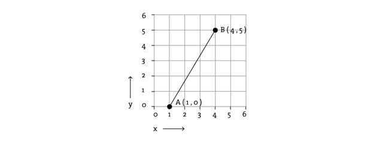
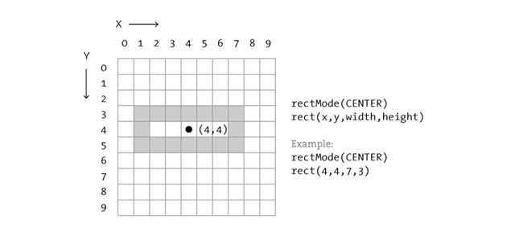
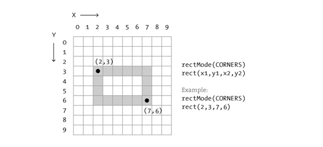
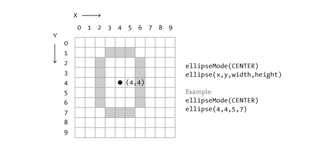
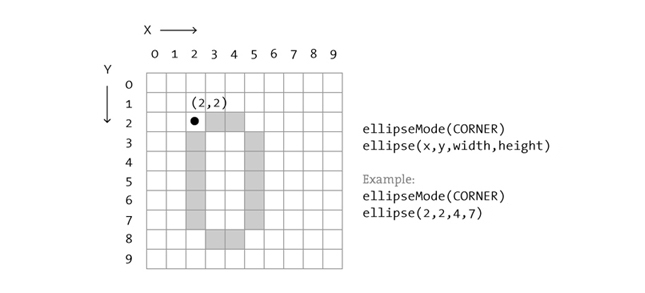

Coordinate System and Shapes
This tutorial is for Python Mode in Processing version 2+. If you see any errors or have comments, please let us know. This tutorial is from the book, Learning Processing, by Daniel Shiffman, published by Morgan Kaufmann Publishers, Copyright © 2008 Elsevier Inc. All rights reserved.
Coordinate Space
Before we begin programming with Processing, we must first
channel our eighth grade selves, pull out a piece of graph paper,
and draw a line. The shortest distance between two points is a
good old fashioned line, and this is where we begin, with two
points on that graph paper.

The above figure shows a line between point A (1,0) and point B
(4,5). If you wanted to direct a friend of yours to draw that
same line, you would give them a shout and say "draw a line from
the point one-zero to the point four-five, please." Well, for the
moment, imagine your friend was a computer and you wanted to
instruct this digital pal to display that same line on its
screen. The same command applies (only this time you can skip the
pleasantries and you will be required to employ a precise
formatting). Here, the instruction will look like this:
line(1,0,4,5)
Even without having studied the syntax of writing code, the above statement should make a fair amount of sense. We are providing a command(which we will refer to as a "function") for the machine to follow entitled "line." In addition, we are specifying some arguments for how that line should be drawn, from point A (1,0) to point B (4,5). If you think of that line of code as a sentence, the function is a verb and the arguments are the objects of the sentence. The code sentence also ends with a semicolon instead of a period.

The key here is to realize that the computer screen is nothing more than a fancier piece of graph paper. Each pixel of the screen is a coordinate - two numbers, an "x" (horizontal) and a "y" (vertical) - that determines the location of a point in space. And it is our job to specify what shapes and colors should appear at these pixel coordinates.
Nevertheless, there is a catch here. The graph paper from eighth grade ("Cartesian coordinate system") placed (0,0) in the center with the y-axis pointing up and the x-axis pointing to the right (in the positive direction, negative down and to the left). The coordinate system for pixels in a computer window, however, is reversed along the y-axis. (0,0) can be found at the top left with the positive direction to the right horizontally and down vertically.

Simple Shapes
The vast majority of the programming examples you'll see with
Processing are visual in nature. These examples, at their core,
involve drawing shapes and setting pixels. Let's begin by looking
at four primitive shapes.

For each shape, we will ask ourselves what information is
required to specify the location and size (and later color) of
that shape and learn how Processing expects to receive that
information. In each of the diagrams below, we'll assume a window
with a width of 10 pixels and height of 10 pixels. This isn't
particularly realistic since when you really start coding you
will most likely work with much larger windows (10x10 pixels is
barely a few millimeters of screen space.) Nevertheless for
demonstration purposes, it is nice to work with smaller numbers
in order to present the pixels as they might appear on graph
paper (for now) to better illustrate the inner workings of each
line of code.
A point()
is the easiest of the shapes and a good place to start. To draw a
point, we only need an x and y coordinate.

A line()
isn't terribly difficult either and simply requires two points:
(x1,y1) and (x2,y2):

Once we arrive at drawing a rect(),
things become a bit more complicated. In Processing, a rectangle
is specified by the coordinate for the top left corner of the
rectangle, as well as its width and height.

A second way to draw a rectangle involves specifying the
centerpoint, along with width and height. If we prefer this
method, we first indicate that we want to use the "CENTER" mode
before the instruction for the rectangle itself. Note that
Processing is case-sensitive.

Finally, we can also draw a rectangle with two points (the top
left corner and the bottom right corner). The mode here is
"CORNERS".

Once we have become comfortable with the concept of drawing a
rectangle, an ellipse()
is a snap. In fact, it is identical to rect()
with the difference being that an ellipse is drawn where the
bounding box of the rectangle would be. The default mode for
ellipse() is "CENTER", rather than "CORNER."



It is important to acknowledge that these ellipses do not look
particularly circular. Processing has a built-in methodology for
selecting which pixels should be used to create a circular shape.
Zoomed in like this, we get a bunch of squares in a circle-like
pattern, but zoomed out on a computer screen, we get a nice round
ellipse. Processing also gives us the power to develop our own
algorithms for coloring in individual pixels (in fact, we can
already imagine how we might do this using "point" over and over
again), but for now, we are content with allowing the "ellipse"
statement to do the hard work. (For more about pixels, start
with: the
pixels reference page, though be warned this is a great deal
more advanced than this tutorial.)
Now let's look at what some code with shapes in more realistic
setting, with window dimensions of 200 by 200. Note the use of
the size()
function to specify the width and height of the window.

size(200,200) rectMode(CENTER) rect(100,100,20,100) ellipse(100,70,60,60) ellipse(81,70,16,32) ellipse(119,70,16,32) line(90,150,80,160) line(110,150,120,160)
This tutorial is for Python Mode in Processing version 2+. If you see any errors or have comments, please let us know. This tutorial is from the book, Learning Processing, by Daniel Shiffman, published by Morgan Kaufmann Publishers, Copyright © 2008 Elsevier Inc. All rights reserved.